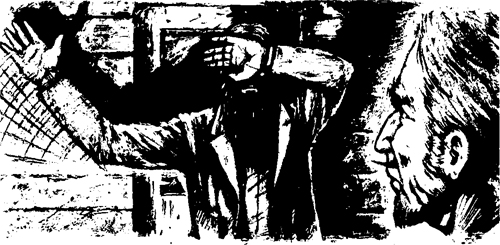
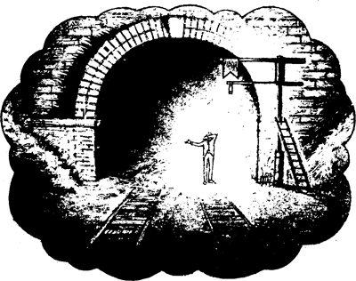
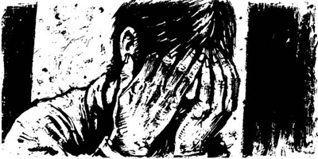
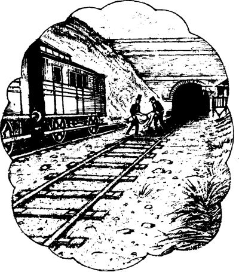
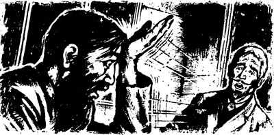

Đêm sau đó, lúc 11 giờ, tôi đi dọc theo con đường. Người gác tín hiệu đợi tôi ở đoạn cắt ngang đường sắt. Ông ta giơ cao chiếc đèn màu trắng của mình.
Chúng tôi đi đến nhà ga và đi lên cầu thang. Chúng tôi vào trong nhà ga và người gác tín hiệu đóng cửa lại. Chúng tôi ngồi bên đống lửa.
Ông ta nói nhỏ: "Tôi sẽ kể lại câu chuyện của mình cho ông nghe". "Hôm qua, tôi thấy cậu - tôi biết điều đó. Nhưng cậu không phải là anh ta!
Tôi trả lời: "Hôm qua là lần đầu tiên tôi đến đây." "Ông đang nói về ai vậy?"
Người gác tín hiệu nói: "Tôi không biết." "Tôi chưa bao giờ nhìn thấy mặt anh ta. Đôi khi anh ta lấy tay che mặt. Đôi khi anh ta để tay trái che mặt và vung tay phải. Anh ta làm như thế này!
Người gác tín hiệu đưa tay trái che mặt. Ông ta vung tay phải sang hai bên.

Tôi nghĩ: "Người hoảng sợ thường vung tay."
Sau đó, tôi lại nghĩ thêm. "Người hoảng sợ thường vung tay và la lên. Họ la rằng, "Hãy tránh đường! Làm ơn, xin làm ơn tránh đường đi!" Đúng rồi, người gác tín hiệu này đã nhìn thấy một người hoảng sợ!
Người gác tín hiệu kể: "Tôi sẽ kể cho ông nghe từ đầu". "Xin ông hãy lắng nghe tôi!"
Ông ta kể: "Một đêm, vào năm ngoái." "Tôi đang ngồi ở đây. Tôi nghe thấy tiếng nói. Có người hét lên rằng, "Xin chào! Xin chào!""
Người gác tín hiệu nói: "Tôi đứng dậy và mở cửa." "Sau đó tôi nhìn thấy ai đó. Có một bóng người đứng gần đường hầm. Anh ta đứng cạnh đèn cảnh báo màu đỏ. Anh ta đang vẫy tay. Anh ta hét rằng, "Nguy hiểm! Nguy hiểm!" Tôi nghe thấy hai từ đó".

Người gác tín hiệu nói: "Tôi lấy đèn trắng, thưa ông." "Tôi chạy về phía bóng người đó. "Có chuyện gì vậy?" Tôi hét lên. Bóng người đó lấy tay che mắt và không nhìn về phía tôi. Tôi định chạm vào cánh tay anh ta. Nhưng đột nhiên, bóng người đó biến mất!"
Tôi hỏi: "Bóng người đó có vào đường hầm không?"
Ông ta trả lời: "Không ạ." "Tôi chạy vào đường hầm. Tôi chạy một quãng dài. Nhưng tôi không nhìn thấy bóng người đó. Đường hầm tối đen, lạnh lẽo và ẩm ướt. Tôi sợ hãi. Tôi để lại chuông và tín hiệu. Tôi chạy ra khỏi đường hầm rất nhanh".
Tôi lắng nghe người gác tín hiệu. Ông ta nói rất nhỏ.
Ông ta kể: "Tôi quay trở lại nhà ga." "Sau đó tôi gửi điện tín cho người gác tín hiệu ở trạm ga. Và tôi gửi điện tín cho người gác tín hiệu ở đầu kia của đường hầm. Tôi nhắn rằng, TÔI NHẬN ĐƯỢC CẢNH BÁO NGUY HIỂM. CÓ CHUYỆN GÌ KHÔNG? Tôi rất lo lắng, thưa ông. Nhưng cả hai người gác tín hiệu đều trả lời: KHÔNG CÓ GÌ BẤT THƯỜNG'.
Người gác tín hiệu nói: "Nhưng mem đã có chuyện bất thường". "Đó là một đêm kinh hoàng, thưa ông!"
Đột nhiên, tôi thấy lạnh và sợ. Tôi không muốn nghe nữa. Nhưng tôi quý mến người gác tín hiệu này và tôi muốn giúp ông ta.
Tôi nói: "Mọi người đều nhìn và nghe thấy những điều kỳ lạ." "Và ông cũng đã nghe tiếng gió kìa! Đoạn giao cắt này rất sâu và đường hầm rất dài. Gió trong đường hầm tạo ra những tiếng động kỳ lạ. Gió ở đoạn giao cắt này cũng như vậy".
Người gác tín hiệu nói tôi với tôi: "Thưa ông, tôi vẫn chưa kể xong câu chuyện của mình".
Tôi nói: "Tôi rất xin lỗi." "Xin ông hãy kể tiếp cho tôi nghe".
Người gác tín hiệu chạm vào cánh tay tôi.
Ông ta nói: "Thưa ông." "Tôi đã nhìn thấy bóng người đó gần đèn cảnh báo. Sáu giờ sau, có một tai nạn khủng khiếp xảy ra trong đường hầm. Sáng hôm sau, người ta đưa người chết và người bị thương ra khỏi đường hầm".
Đây là một câu chuyện kinh hoàng. Nhưng tôi lại cố gắng giúp người gác tín hiệu tội nghiệp một lần nữa.
Tôi nói: "Có nhiều điều kỳ lạ đã xảy ra." "Và chúng ta còn không biết —"
Người gác tín hiệu vội vàng nói: "Xin lỗi ông, thưa ông." "Tôi vẫn chưa kể xong câu chuyện của mình".
Tôi lại nói: "Tôi rất xin lỗi." "Xin ông hãy kể tiếp cho tôi nghe".
Người gác tín hiệu nói: "Tai nạn đó xảy ra cách đây một năm." "Tôi không thể ngủ hay ăn sau tai nạn đó. Tôi bị ốm. Sau đó, ba tháng sau, tôi khỏe hơn. Nhưng sáu tháng trước, tôi lại nhìn thấy bóng người đó lần nữa".
Tôi hỏi: "Xin ông hãy kể cho tôi nghe chuyện đó".
Ông ta kể: "Thưa ông." "Tôi đứng ở đây, ở cửa". Ông ta chỉ về phía cửa. "Lúc đó, trời mới tờ mờ sáng. Mặt trời chiếu vào đoạn giao cắt. Tôi nhìn về phía đường hầm tối om. Và tôi lại nhìn thấy bóng người đó!"
Chúng tôi đều im lặng một lúc.
Tôi hỏi: "Anh ta có hét lên với ông không?"
Người gác tín hiệu trả lời: "Không." "Anh ta im lặng".
Tôi hỏi lại: "Anh ta có vẫy tay không?"
Người gác tín hiệu trả lời: "Không, thưa ông." "Anh ta đứng dưới ánh nắng và lấy tay che mặt".
Người gác tín hiệu đưa tay che mặt. Ông ta che mắt. Ông ta nói rằng: "Anh ta làm thế này, thưa ông".

Tôi quan sát người gác tín hiệu. Người tôi lại thấy lạnh run.
Tôi nghĩ: "Tôi đã thấy những bóng người che mặt như vậy." "Tôi đã thấy họ ở nghĩa trang! Đó là những bức tượng bằng đá ở nghĩa trang. Những bức tượng bằng đá đang khóc. Có thể người gác tín hiệu đã nhìn thấy ai đó khóc gần đường hầm?"
Tôi hỏi người gác tín hiệu: "Ông có chạy vào đường hầm không?"
Ông ta trả lời là không. "Tôi ngồi xuống." "Tôi cảm thấy chóng mặt. Vài phút sau, tôi lại nhìn về phía đường hầm. Bóng người đó đã biến mất".
Tôi hỏi: "Sau đó thì sao nữa?"
Người gác tín hiệu lại chạm vào cánh tay tôi.
Ông ta nói: "Thưa ông, vào buổi chiều cùng ngày, một chuyến tàu khởi hành từ Dover đi ra khỏi đường hầm." "Những người ở toa cuối cùng liên tục vẫy tay. Người lái tàu nhìn lại phía sau. Tôi vẫy cờ và ông ta đã nhìn thấy. Chuyến tàu đi qua trạm ga khoảng năm trăm feet rồi mới dừng lại. Tôi chạy dọc theo đường ray đến chỗ tàu hỏa".
Người gác tín hiệu nói: "Một cô gái trẻ xinh đẹp đã chết ở toa cuối cùng, thưa ông." "Chúng tôi đưa xác cô ấy dọc theo đường ray. Chúng tôi đưa cô ấy về nhà ga".

Chúng tôi đều im lặng trong một phút. Gió tạo ra những âm thanh kỳ lạ ở ngoài kia.
Cuối cùng, người gác tín hiệu nói với tôi: "Cô gái trẻ đó đã mất cách đây sáu tháng." "Tuần trước, bóng người đó lại xuất hiện. Đó là một hồn ma, thưa ông. Giờ thì tôi biết điều đó rồi. Tuần này, tôi đã nhìn thấy hồn ma nhiều lần".
Tôi hỏi: "Ông lại nhìn thấy bóng người đó à?"
Ông ta trả lời có. "Tôi đã nhìn thấy anh ta gần đèn đỏ. Đèn báo hiệu nguy hiểm. Hồn ma đó cũng là một dấu hiệu nguy hiểm!"
Tôi hỏi: "Bóng người đó đang làm gì?"
Ông ta trả lời: "Anh ta làm thế này, thưa ông." "Anh ta vẫy tay".
Người gác tín hiệu lại đưa tay ra che mặt. Ông ta vẫy tay phải sang hai bên.
Tôi nghĩ lại: "Những người hoảng sợ vẫn thường vẫy tay như thế. Và họ la rằng, "Hãy tránh đường! Làm ơn, xin làm ơn tránh đường đi!" Liệu hồn ma có hoảng sợ không? Có hồn ma không? Người gác tín hiệu này có bị điên không?"
Người gác tín hiệu nói: "Giờ thì hồn ma xuất hiện hàng ngày." "Đôi khi, anh ta hét vào mặt tôi trong nhiều phút. "Xin chào! Xin chào! Nguy hiểm! Nguy hiểm!" Anh ta hét lên như vậy. Anh ta vẫy tay về phía tôi. Anh ta rung chuông điện của tôi. Anh ta muốn cảnh báo tôi!"
Tôi hỏi: "Hôm qua, anh ta có rung chuông không?"
Người gác tín hiệu trả lời: "Có, thưa ông. Anh ta rung chuông hai lần." "Ông ở đây, thưa ông".
Tôi nói: "Chuông đã reo hai lần, nghĩa là ông nhận được hai thông điệp." "Ông đã trả lời. Chuông đã không reo thêm lần nào nữa".
Người gác tín hiệu nói: "Hồn ma đã rung chuông." "Ông không nghe thấy, nhưng tôi đã nghe. Hồn ma rung chuông rất nhẹ nhàng".
Tôi hỏi: "Còn đêm qua, hồn ma có hét lên với ông không?"
Ông ta trả lời: "Có ạ." "Tôi mở cửa ra và thấy anh ta ở đó. Anh ta đã ở đó!"
Tôi nói: "Chúng ta hãy cùng đến cửa ngay bây giờ." "Chúng ta sẽ cùng tìm bóng người đó".
Người gác tín hiệu run rẩy mở cửa. Gió lạnh buốt. Bức tường của đoạn cắt ngang đường sắt đen kịt và ẩm ướt. Tôi nhìn thấy đèn đỏ gần đường hầm.
Tôi hỏi: "Ông có nhìn thấy bóng người đó không?"
Ông ta trả lời: "Không. Giờ thì anh ta không ở đó nữa".
Tôi nói: "Đúng rồi, anh ta không có ở đó".
Ông ta đóng cửa và chúng tôi ngồi xuống.
Tôi nghĩ: "Không có hồn ma nào cả. Tôi biết điều đó." "Nhưng người đàn ông này lại nhìn thấy hồn ma. Anh ta bị ốm. Tôi muốn giúp anh ta".
Người gác tín hiệu nói: "Tôi muốn biết một điều." "Hồn ma cảnh báo điều gì vậy?"
Tôi không trả lời. Tôi muốn nói rằng, "Không có hồn ma nào". Nhưng tôi không nói gì cả.
Người gác tín hiệu gõ đầu vào tay. Ông ta nói: "Tôi phải làm gì bây giờ?" "Tôi có nên gửi điện tín không?"

Tôi trả lời: "Vâng." "Hãy gửi tin nhắn — CÓ NGUY HIỂM! HÃY RẤT CẨN THẬN".
Ông ta nói: "Các gác tín hiệu khác sẽ trả lời, thưa ông." "Họ sẽ trả lời — NGUY HIỂM GÌ? NGUY HIỂM Ở ĐÂU? Sau đó, tôi sẽ trả lời — TÔI KHÔNG BIẾT. NHƯNG CÓ NGUY HIỂM! Và họ sẽ gửi tin nhắn — ÔNG BỊ ĐIÊN RỒI!".
Người gác tín hiệu nói: "Khi đó, tôi sẽ mất việc, thưa ông". Ông ta lại gõ đầu vào tay. Ông ta rất buồn.
Ông ta nói rất nhỏ: "Hồn ma đã cảnh báo tôi." "Sẽ có một điều kinh khủng xảy ra. Tôi phải làm gì bây giờ?"
Tôi không nói rằng, "Không có hồn ma nào". Tôi cố gắng giúp người gác tín hiệu.
Tôi nói: "Ông có một công việc quan trọng." "Ông phải làm tốt công việc của mình. Nhưng ông mệt mỏi và buồn. Ông cần nghỉ ngơi".
Người gác tín hiệu im lặng và nhìn tôi rất lâu.
Cuối cùng, ông ta nói: "Ông nói đúng." "Đúng rồi, tôi cần phải làm tốt công việc của mình".
Ông ta đứng dậy và đến bàn làm việc. Ông ta nhìn máy điện báo.
Tôi hỏi: "Tôi có thể ở lại với ông tối nay không?"
Ông ta trả lời: "Không, thưa ông." "Ông không cần phải ở lại. Ông đã rất tốt với tôi. Ông đã lắng nghe câu chuyện của tôi. Và ông đã giúp tôi. Nhưng hãy quay về khách sạn của ông lúc này".
Tôi rời khỏi nhà ga lúc hai giờ sáng. Tôi nhìn vào lối vào tối om của đường hầm và đèn đỏ. Tôi nhìn những bức tường ẩm ướt của đoạn giao cắt đường sắt cao. Tôi nhìn lại nhà ga bằng gỗ nhỏ bé kia một lần nữa. Tôi thấy lạnh và sợ hãi. Tôi đi lên con đường mòn.
Tôi nghĩ: "Người đàn ông đó rất buồn." "Anh ta bị ốm. Tôi phải giúp anh ta. Tôi sẽ đưa anh ta gặp bác sĩ. Tôi sẽ quay lại vào ngày mai và nói chuyện thêm với người gác tín hiệu".